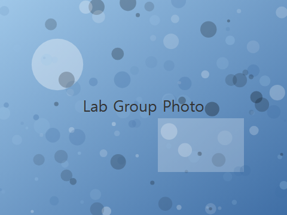
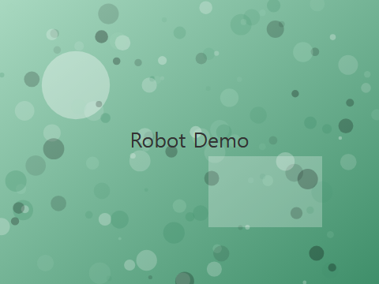

|
Intelligent Systems & Interaction Lab 지능형 시스템 및 상호작용 연구실 (ISI Lab), 한백대학교 컴퓨터공학과 |
| Overview | Research Areas | News | Publications | Members |
The Intelligent Systems & Interaction Lab (ISI Lab) was founded in 2015 at Hanbaek University, Department of Computer Engineering. 본 연구실은 로봇 지능, 인간-로봇 상호작용(HRI), 그리고 멀티모달 센서 융합을 중심으로 연구를 수행하고 있습니다. Our mission is to build robots and intelligent agents that can perceive, reason about, and collaborate naturally with people in everyday environments. The lab currently consists of 1 PI, 2 postdoctoral researchers, and 9 graduate students, and has received funding from the National Research Foundation of Korea (NRF) and several industry partners since 2016.

We study how people build trust with robots over repeated interactions, focusing on non-verbal cues such as gaze, gesture, and proxemics. 최근에는 사회적 로봇의 발화 타이밍과 반응 지연이 사용자의 신뢰도에 미치는 영향을 정량적으로 분석하는 연구를 진행 중입니다. Our HRI studies typically run in a controlled lab environment with 20-40 participants per study.
This research area combines vision, LiDAR, and audio streams to build robust perception pipelines for mobile robots operating in cluttered indoor environments. 특히 저조도 환경에서의 객체 인식 성능 저하 문제를 해결하기 위해 열화상 카메라를 추가로 활용하는 방법을 연구하고 있습니다.
We design robotic systems to support elderly individuals living alone, including fall detection, medication reminders, and simple conversational check-ins. 2023년부터 지역 요양시설과 협력하여 실제 환경에서의 파일럿 테스트를 진행해 왔으며, 이를 통해 실사용자 피드백을 축적하고 있습니다.
Standard reinforcement learning policies are often black boxes. Our lab develops methods to visualize and explain a policy's decision process so that non-expert operators can audit robot behavior before deployment on factory floors and warehouses.

| Name | Role | |
| Prof. Jiwoo Han | Principal Investigator | jwhan@example.com |
| Dr. Seoyeon Lee | Postdoctoral Researcher | sylee@example.com |
| Dr. Taemin Oh | Postdoctoral Researcher | tmoh@example.com |
| Doyoon Kim | PhD Student | dykim@example.com |
| Minji Park | PhD Student | mjpark@example.com |
| Yerin Choi | PhD Student | yrchoi@example.com |
| Junho Bae | MS Student | jhbae@example.com |
| Hana Song | MS Student | hsong@example.com |
| Woojin Yoon | MS Student | wjyoon@example.com |
| Areum Shin | MS Student | ashin@example.com |
| David Kwon | Undergraduate Intern | dkwon@example.com |
© ISI Lab, Department of Computer Engineering, Hanbaek University.